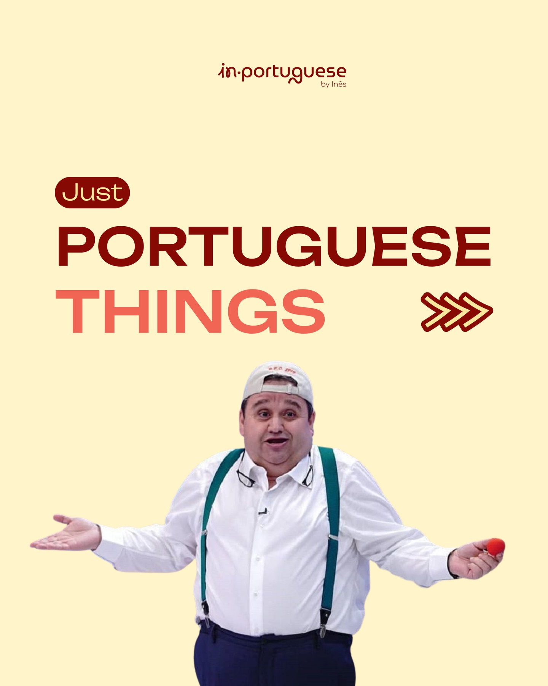
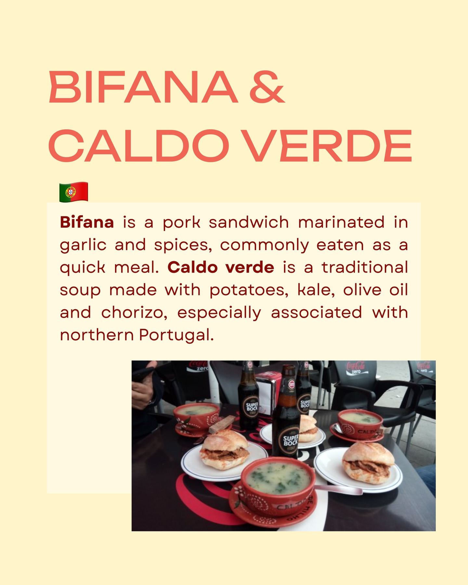
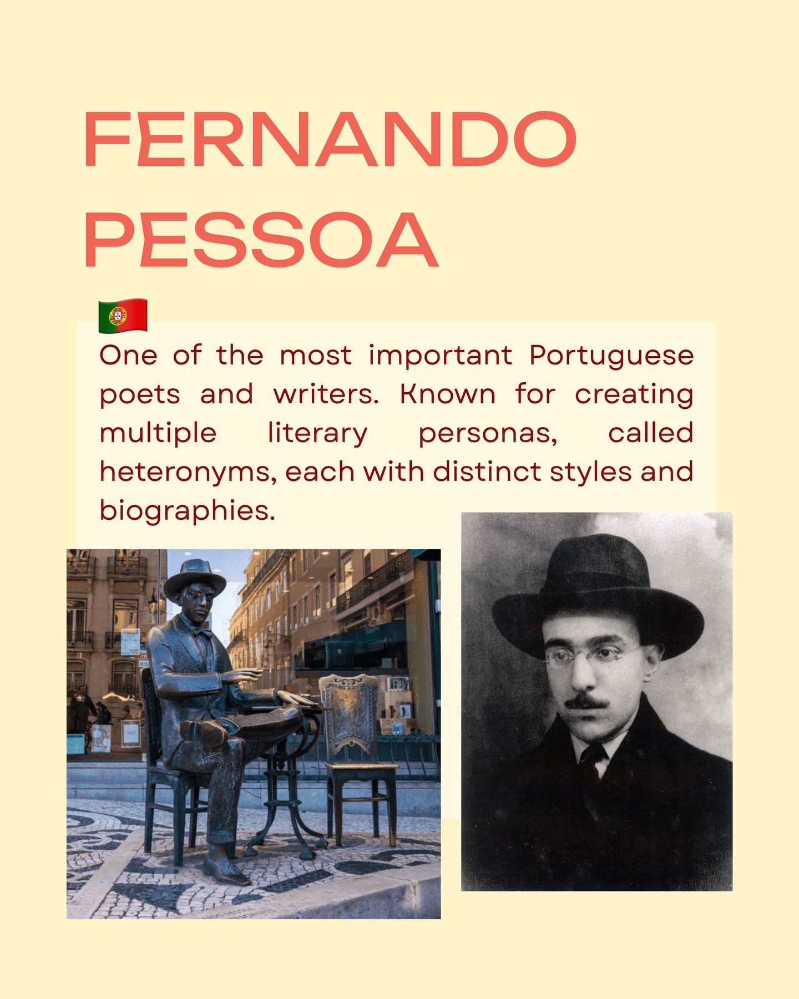
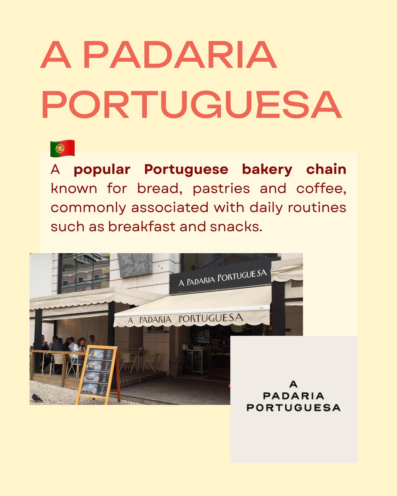
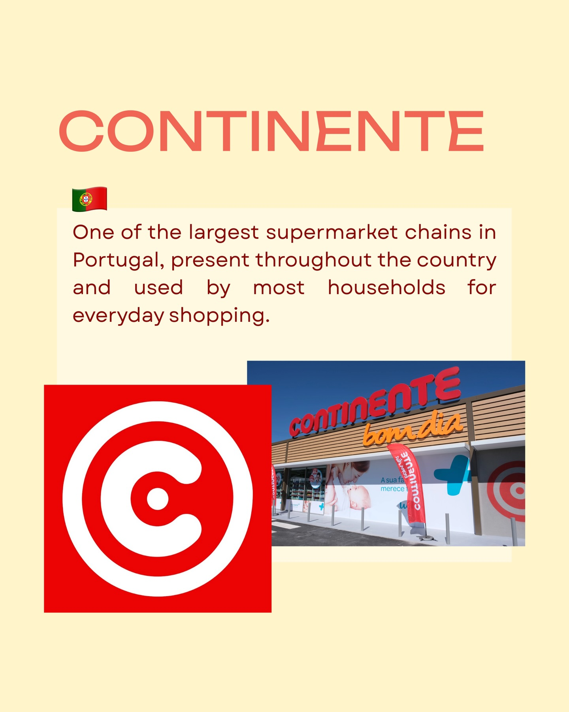
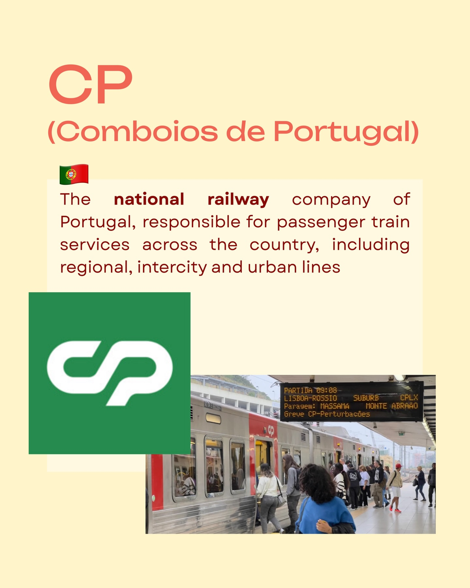

Instagram Post

in.portuguese by Inês Just PORTUGUESE THINGS
carousel (10 slides) (enriched by ClaudeClaw)
Summary
in.portuguese by Inês Just PORTUGUESE THINGS | in.portuguese by Inês Just PORTUGUESE THINGS | BIFANA & CALDO VERDE 🇵🇹 Bifana is a pork sandwich marin... | FERNANDO PESSOA 🇵🇹 One of the most important Portuguese... | CRISTINA FERREIRA 🇵🇹 A well-known Portuguese television... | MBWAY 🇵🇹 A Portuguese mobile payment system linked to b... | CONTINENTE One of the largest supermarket chains in...
1
in.portuguese by Inês Just PORTUGUESE THINGS
A man wearing a white shirt, green suspenders, and a baseball cap stands with outstretched arms, holding a red ball in one hand, against a plain light background with overlaid text.
2
in.portuguese by Inês Just PORTUGUESE THINGS
A man wearing a white shirt, green suspenders, dark pants, and a baseball cap stands with his arms outstretched, holding a small red ball in his right hand, against a plain light yellow background.
3
BIFANA & CALDO VERDE 🇵🇹 Bifana is a pork sandwich marinated in garlic and spices, commonly eaten as a quick meal. Caldo verde is a traditional soup made with potatoes, kale, olive oil and chorizo, especially associated with northern Portugal. SUPER BOCK Coca-Cola zero CALDO DE MILHO
A table is set with multiple bowls of Caldo Verde soup, Bifana pork sandwiches, and bottles of Super Bock beer, with black chairs and a person's arm visible in the background.
4
FERNANDO PESSOA 🇵🇹 One of the most important Portuguese poets and writers. Known for creating multiple literary personas, called heteronyms, each with distinct styles and biographies.
The image displays information about Fernando Pessoa, featuring a black and white portrait of him, a bronze statue of him sitting at a table outdoors, and descriptive text.
5
A PADARIA PORTUGUESA 🇵🇹 A popular Portuguese bakery chain known for bread, pastries and coffee, commonly associated with daily routines such as breakfast and snacks. A PADARIA PORTUGUESA A PADARIA PORTUGUESA A PADARIA PORTUGUESA
The image is an infographic or social media post featuring a photo of the exterior of a Portuguese bakery with outdoor seating, accompanied by text describing the bakery chain and its name.
6
CRISTINA FERREIRA 🇵🇹 A well-known Portuguese television presenter and media personality, strongly associated with daytime television and popular entertainment programs. She co-hosted a popular TV show with Manuel Luís Goucha for many years.
The image displays a biography of Cristina Ferreira, a Portuguese television presenter, with a large title and descriptive text, accompanied by two photos of her: one with Manuel Luís Goucha on a set and another portrait in a white blazer.
7
MBWAY 🇵🇹 A Portuguese mobile payment system linked to bank accounts, widely used for instant transfers, online payments and in-store purchases. It is one of the most common ways to pay in Portugal. MB WAY MB WAY
The image displays information about MBWAY, featuring the name "MBWAY" in large text, a paragraph description, the MB WAY logo, and a person holding a smartphone with the MB WAY logo on its screen.
8
CONTINENTE One of the largest supermarket chains in Portugal, present throughout the country and used by most households for everyday shopping. CONTINENTE bom dia A sua fa merece CONTINENTE
An infographic about the Continente supermarket chain features its name, a descriptive paragraph, a logo, and a photograph of a store entrance under a blue sky.
9
CM TV 🇵🇹 A Portuguese television news channel known for continuous coverage of current events, crime and live reporting. Their reporters appear instantly at crime scenes - sometimes seemingly before the police, the ambulance, or the crime itself. 😅 cm TV
The image displays text describing the Portuguese television news channel CM TV, including its logo, against a plain light yellow background.
10
CP (Comboios de Portugal) The national railway company of Portugal, responsible for passenger train services across the country, including regional, intercity and urban lines PARTIDA 09:08 LISBOA-ROSSIO SUBURB CPLX Paragem: MASSAMA MONTE ABRAAO Greve CP-Perturbações
A train is stopped at a station platform with passengers boarding and waiting, and a digital display board shows departure information.
All slides




